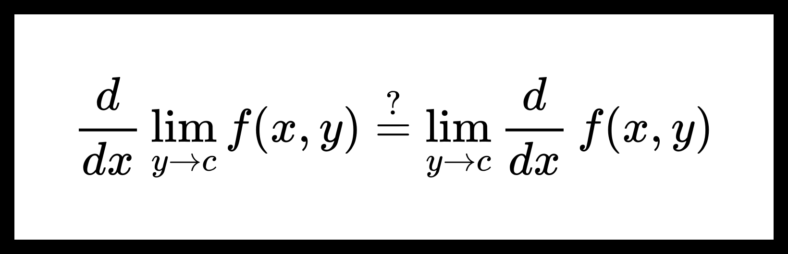

Дифференцирование пределов
Теорема. О дифференцировании пределов функций.
Пусть дана функция f(x,y):[a,b]×E→R, где E⊆R. Пусть c — предельная точка множества E, а также верно следующее:
-
∀y∈E существует dxdf(x,y), непрерывная по переменной x на интервале [a,b];
-
dxdf(x,y)y→b⇉x∈[a,b]ψ(x);
-
∃x0∈[a,b] ∃limy→cf(x0,y)=φ0.
Тогда найдется такая функция φ(x), что:
-
f(x,y)y→b⇉x∈[a,b]φ(x);
-
∀x∈[a,b] φ′(x)=ψ(x).
Доказательство:
Из теоремы о непрерывности равномерного предела непрерывных функций следует, что ψ(x) непрерывна на [a,b]. Поэтому определена функция
φ(x)=φ0+∫x0xψ(t)dt.
Очевидно, что для нее верно заключение 2.
Покажем, что верно и заключение 1.
Из условия 1 теоремы следует, что функцию f(x,y) можно представить в виде:
f(x,y)=f(x0,y)+∫x0xdtdf(t,y)dt.
Поэтому верна оценка:
0≤x∈[a,b]sup∣f(x,y)−φ(x)∣≤∣f(x0,y)−φ0∣+x∈[a,b]sup∣∫x0x(dtdf(t,y)−ψ(t))dt∣.(1)
Заметим, что
∃y→clim∣f(x0,y)−φ0∣=0.
Теперь рассмотрим второе слогаемое
0≤x∈[a,b]sup∣∫x0x(dtdf(t,y)−ψ(t))dt∣≤x∈[a,b]sup∣∫x0xdtdf(t,y)−ψ(t)dt∣≤
≤∫abdxdf(x,y)−ψ(x)dx≤∫abx∈[a,b]supdxdf(x,y)−ψ(x)dx=
=(b−a)x∈[a,b]supdxdf(x,y)−ψ(x)y→c⟶0.
Получим, что существует предел
∃y→climx∈[a,b]sup∣∫x0x(dtdf(t,y)−ψ(t))dt∣=0.
Из неравенства (1) можем сделать вывод, что
∃y→climx∈[a,b]sup∣f(x,y)−φ(x)∣=0
или
f(x,y)y→b⇉x∈[a,b]φ(x).